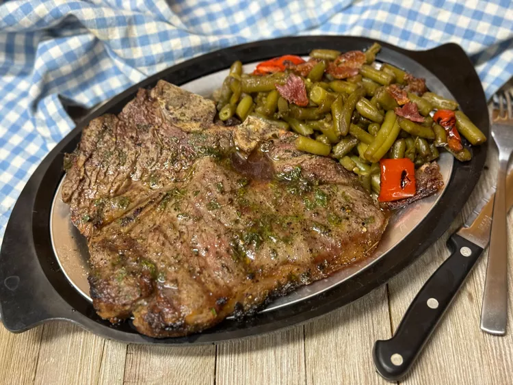

Home
Greek Steak Marinade

Description
This Greek steak marinade, with just a few ingredients, delivers flavorful steaks worthy enough to serve to guests. It's quick to prepare and perfect for enhancing your favorite cuts of beef.
Ingredients
- 1/4 cup extra-virgin olive oil
- 2 tablespoons minced fresh oregano
- 2 tablespoons all-purpose Greek seasoning (such as Cavender's®)
- 1/2 teaspoon salt
- 1/4 teaspoon freshly cracked black pepper
Steps
- Whisk extra virgin olive oil, oregano, Greek seasoning, salt, and pepper in a small bowl until smooth.
- Pour marinade over steaks, ensuring all sides are coated. Cover and refrigerate for 4 hours.